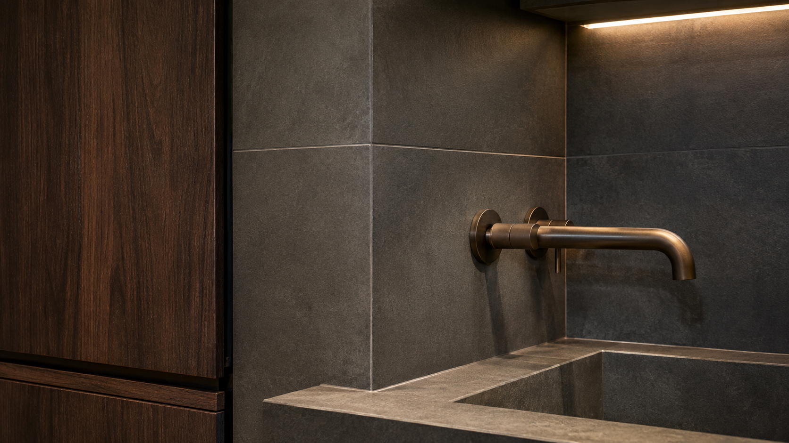

Graphite Porcelain
넓은 면으로 사용할수록 색의 균일함과 줄눈 배치가 중요합니다.
CURATED MATERIAL LIBRARY / 01

무광 차콜 포세린의 잔잔한 표면에 월넛과 브론즈의 따뜻한 온도를 더합니다. 낮은 조명에서도 면의 결이 과하게 번들거리지 않는 조합입니다.
넓은 면으로 사용할수록 색의 균일함과 줄눈 배치가 중요합니다.
차가운 석재 표면에 손이 닿는 온기와 깊이를 더합니다.
광택을 낮춘 금속으로 수전과 프레임의 윤곽만 남깁니다.
COMPOSITION RULE
NEXT / MATERIAL CONSULTATION